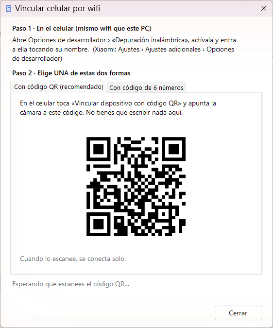

Espejo CelularNueva app gratuita para Windows
Después basta un botón para ver tu celular en el PC.
El instalador trae todo lo necesario.
Desde Depuración inalámbrica, en las opciones de desarrollador del celular.
Pulsa «Conectar y mostrar» y aparece tu celular.
